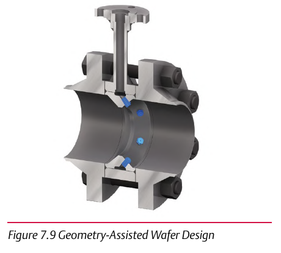

Geometry-Assisted Wafer Design

- 1Solves a constraint none of the other four designs address: small pipe below NPS 6
- 2An insertion-style desuperheater physically won't fit that small
- 3Rangeability 20:1 across NPS 1-24 once the wafer form factor is used
Control Valve Handbook, 6th ed., Fig. 7.9. Component Index: cvh-cmp-geometry-assisted-wafer-design.